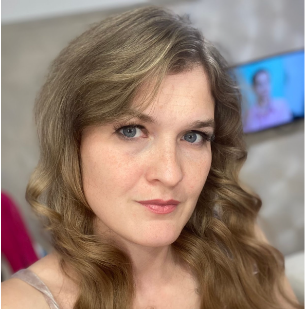

Давайте знакомиться!
 Меня зовут Дарья, и уже несколько лет я пишу книги.
Сейчас у меня два направления фэнтези и современный любовный роман.
Каждый жанр мне близок и любим.
Для любителей фэнтези я пишу под псевдонимом Дарья Перфильева, а современные романы – Яна Милан.
Я – многодетная мама, любитель математики и постоянный студент.
У меня множество книг в жанре романтического фэнтези, чуть меньше в жанре СЛР.
Есть одна напечатанная книга, которую можно купить на OZON.
Не представляю свою жизнь без книг и писательства.
Если вы хотите узнать обо мне и о моих книгах больше, то подписывайтесь на мои соцсети!
Все книги Яны Милан
Все книги Дарьи Перфильевой
Группа в контакте с полезной информацией
Канал в телеграмме для розыгрышей и информации
Все мои клипы Вконтакте